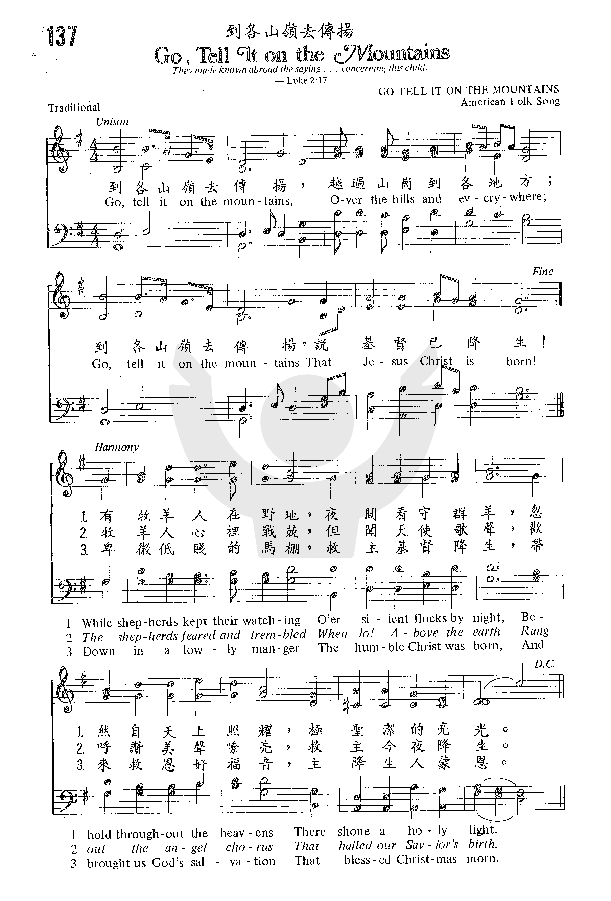
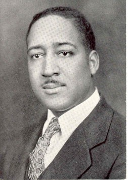
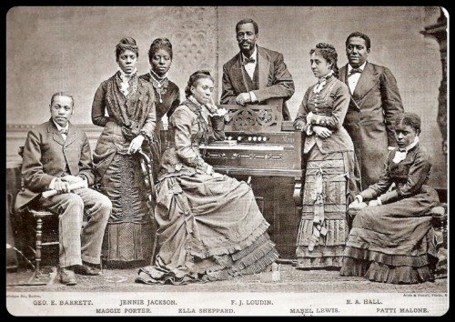

0093
Go, Tell It on the Mountains _spiritual
到各山嶺去傳揚
| 簡介
Go, Tell It on the Mountain |
| Like other material from oral
traditions, 19th-century African American spirituals flourished without
being written down. Their refrains were their most stable parts, and
narrative stanzas were often improvised to fit. These Nativity stanzas
attempt to recall that tradition. |
|
|
|
|
Refrain:
Go tell it on the mountain,
over the hills and everywhere;
go tell it on the mountain
that Jesus Christ is born!
1 While shepherds kept their watching
o’er silent flocks by night,
behold throughout the heavens
there shone a holy light. [Refrain]
2 The shepherds feared and trembled
when lo! above the earth
rang out the angel chorus
that hailed our Savior’s birth. [Refrain]
3 Down in a lowly manger
the humble Christ was born,
and God sent us salvation
that blessed Christmas morn. [Refrain]
Source: Voices Together #252
|
到各山嶺去傳揚，越過山崗到各地方，
到各山嶺去傳揚，說基督已降生。
當我以前尋求，不論黑夜白晝，
我求耶穌來幫助，祂就指示我路。
主基督門徒中，我是最小一個，
但主派我作守望，日夜城牆站崗。
到各山嶺去傳揚，越過山崗到各地方，
到各山嶺去傳揚，說基督已降生。 |
|
https://www.zanmeishige.com/tab/25472.html?songbook=1&index=137

 |
| |
|
http://www.hymncompanions.org/Feb/13/stream.php
（副歌）
到各山嶺去傳揚，越過山崗到各地方；
到各山嶺去傳揚，說基督已降生！
有牧羊人在野地，夜間看守群羊，
忽然自天上照耀，極聖潔的亮光。
到各山嶺去傳揚，越過山崗到各地方；
到各山嶺去傳揚，說基督已降生！
牧羊人心�媥埳腹A但聞天使歌聲，
歡呼讚美聲嘹亮，救主今夜降生。
到各山嶺去傳揚，越過山崗到各地方；
到各山嶺去傳揚，說基督已降生！
卑微低賤的馬棚，救主基督降生，
帶來救恩好福音，主降生人蒙恩。
到各山嶺去傳揚，越過山崗到各地方；
到各山嶺去傳揚，說基督已降生！
 (請點耳機收聽)
(請點耳機收聽)
山上有寬敞的空間和地土，山上的聲音可傳得更廣遠。 讓我們登山傳揚這福音。
這是一首美國民歌，也是黑人靈歌，經常被列入聖誕歌選，最早出現在1907年出版的「美國黑人民歌」（Folk Songs of American
Negro）。黑人民歌和靈歌源自非洲黑奴。在十八世紀末葉及十九世紀初，黑人在美國南方盛行露營佈道會，許多他們的傳統詩歌在1940年付梓，書名為American
Negro Songs and Spirituals。 書中提到黑人靈歌的幾個特色：
一. 保存他們固有的旋律和節奏。
二. 將非洲啟應式的民歌加入新的歌詞。
三. 各地黑奴因被交換，他們受基督教影響而結合成一團。
四. 他們自然地擴展他們所聽到的宗教詩歌，而不是仿傚的。
在美國南北戰爭前，美國非裔的黑人，多數是沒有受過教育的奴隸，他們被欺壓苦待，渴望自由。他們藉著歌唱紓解內心的痛苦，許多詩歌流傳下來，都不知創作者是誰。內戰結束後，華軻（John
Wesley Work）在一美國非裔教會，擔任詩班指揮，其中有些班員來自鄰近的非裔大學，他們組成了（Jubilee
Singers）合唱團，把黑人靈歌發揚廣大。他們曾被邀請在白宮亞瑟總統前及英國維多利亞女王御前獻唱。他們經常環球演唱，展現了美國非裔的音樂才華。
本詩的歌詞是華克紹（John W. Work Jr.,
1871-1925）所寫。他繼承了他父親對黑人靈歌的熱愛，並收集黑人靈歌。他和他弟弟華福德（Frederick J.
Work）是早期推介黑人靈歌的促進者。今日黑人靈歌在美國民謠和聖詩中均佔重要的一席。

據華克紹的兒子所憶，當年華克紹在Fisk大學執教時，該校有一傳統，在聖誕清晨，日出以前，學生們在校園中聚集一起，成群結隊走向每一幢宿舍報唱「到各山嶺去傳揚，基督已降生！」「榮耀歸於新生王」等聖誕歌曲。
最後大家在餐廳搖曳的燭光下，舉行一個簡短的聖誕晨更早餐會。
中英文聖詩集參考
英文歌名 Go,
Tell It on the Mountains
教會聖詩 137
歡欣讚美 258
讚美 442
恩頌聖歌 151
世紀讚頌 149
頌主聖詩 122
青年聖歌II 7
讚美詩(新編)補充本 56
http://www.xueshengshi.com/?p=10189
.jpeg)

blackface and minstrel shows
http://www.sinovision.net/home/space/do/blog/uid/388329/id/330694.html
圣诞诗歌 二十三、到各山岭去传扬 Go Tell It On The Mountain
经文： 以赛亚书40章9节
报好信息给锡安的啊，你要登高山；报好信息给耶路撒冷的啊，你要极力扬声。扬声不要惧怕，对犹大的城邑说：看哪，你们的神！
约翰·卫斯理·沃克(John Wesley Work III) 尽他所能地要让人们都听到这首歌。
大众普遍认定他是首位非洲裔的民歌与灵歌搜集整理者。他不断在美国东部的阿巴拉契亚地区旅行，在各山间村落收集和整理当地的音乐。在1907年，他发表了专辑《黑人新禧年灵歌与民歌集》，其中就收录了《到各山岭去传扬》这首歌。历史学家们认为这首歌的旋律与人们熟知的灵歌《我们要围绕耶路撒冷》（We’ll
March Around Jerusalem）和民歌《哦，苏珊娜》（Oh,
Susanna）近似。（灵歌就是由圣灵带领、感动、膏抹词、曲作者完成的歌曲，这样的旋律符合圣经的教导，符合敬拜上帝的标准，使基督徒可以通过歌曲的敬拜更多的来到上帝的面前，也就是被上帝感动或启示的歌曲。这样的歌曲带有圣灵工作的能力，可以苏醒人心。——解释摘自百度知道）
读者文摘《欢乐圣诞歌曲赏析》（The Reader’s Digest Merry Christmas Songbook）中记述着以下的故事：
“对于那些美国的黑奴而言，那一位能够释放所有世人救主的降生实在是一个要放声来歌唱的神迹。要宣布一件值得众人注意的大事时，山顶无疑是最好的选择，正如主耶稣也选择了在山顶留给我们珍贵无比的‘登山宝训’。《到各山岭去传扬》最早成歌于19世纪初，而直到1879年因着“菲斯克大学禧年歌者”合唱团的传唱而逐渐流行起来。这个合唱团在19世纪末期旅行到欧美各国演唱，为他们的菲斯克学院筹款。这所学院是为那些已获自由的黑人能够受教育而特别创立的。”
这首灵歌的歌词这样写到：
有牧羊人在野地，夜间看守群羊，
忽然自天上照耀，极圣洁的亮光。
到各山岭去传扬，越过山岗到各地方；
到各山岭去传扬，说基督已降生！
（副歌）
到各山岭去传扬，越过山岗到各地方；
到各山岭去传扬，说基督已降生！
牧羊人心里战兢，但闻天使歌声，
欢呼赞美声嘹亮，救主今夜降生。
到各山岭去传扬，越过山岗到各地方；
到各山岭去传扬，说基督已降生！
卑微低贱的马棚，救主基督降生，
带来救恩好福音，主降生人蒙恩。
到各山岭去传扬，越过山岗到各地方；
到各山岭去传扬，说基督已降生！
“到各山岭去传扬”的意思就是“不要藏着掖着，到各个地方去告诉所有人，主耶稣降生了。”
基督到来了！
万王之王降临了！
神成为了我们的邻居！
去世界各地传扬这个消息吧！
天父，请赐给我们力量让我们能像这首所写的那样去行，到世界各地广传耶稣基督已经降生的好消息。阿们。
https://hymnary.org/text/while_shepherds_kept_their_watching
Notes
Scripture References:
all st. = Luke 2:8-20
ref. = Matt. 28:19
The text of this beloved
spiritual was first published in Folk Song of the American Negro (1907),
a study of African American folk music by John Wesley Work, Jr. (PHH
476). The song may date back to earlier sources, but evidently the
original text was lost. According to Edith McFall Work, widow of John Wesley
Work, III:
the verses of these
songs were published by John Work, II, in place of the original ones which
could not be found. In 1940 John Work, III, had the songs copyrighted and
published [at 215] in his book American Negro Songs.”
-Companion to the United Methodist Hymnal, p. 360
In American Negro
Songs and Spiritual (1940), John Wesley Work, III, attributes the
newer text to his uncle Frederick J. Work. "He may have composed it" [the
tune], wrote J. W. Work, III. "I know he composed the verses." John, III,
recalled that when he was a child, the students at Fisk University began
singing this before daybreak on Christmas morning, going from building to
building. Later, his arrangement for use in choral concerts by the Fisk
Jubilee Singers helped to popularize the spiritual.
The refrain theme comes
from Old Testament passages in which praise to God for his acts of
deliverance was often shouted, both literally and metaphorically, from the
mountaintops (Isa. 42:11). While the three stanzas tell the essence of the
Christmas story, the refrain underscores the missionary impetus of the
Christian church: "go and make disciples of all nations" (Matt. 28:19). The
"go, tell," which initially applied to the singers caroling on the
university campus, is a signal for us to leave the comfortable confines of
Christian worship and "go, tell" the message of Christ's redemption to the
whole world.
Because of the spiritual's
oral tradition, variants in text and melody exist. A textual variant for
"Go, Tell It" is an Easter version with the following refrain text:
Go, tell it on the
mountain,
Over the hills and everywhere;
Go, tell it on the mountain
That Jesus lives again.
Liturgical Use:
Christmas morning; a Christmas candlelight service; "carols from many lands"
service; the refrain could be used by itself as a chorus on Christmas Day,
or it could be combined with the Easter refrain version (see above) and used
during worship services that focus on missions.
--Psalter Hymnal
Handbook
Note: The book American
Negro Songs and Spirituals: A Comprehensive Collection of 230 Folk Songs,
Religious and Secular, with a forward by John W. Work (1940), states
that "These verses were supplied by John Work Sr. in place of the original
ones which could not be found." (p. 215).
In the Bible, the mountain often represents the holy presence of God. Moses has
to go up the mountain to receive the Ten Commandments and to see the Promised
Land. In the Gospel, Jesus is transfigured on a mountain, an event signifying
the full embodiment of the divine nature and holiness of Christ. In the Old
Testament especially, the mountain is also a place that is set apart – not just
everyone can go up the mountain to be in God’s presence. Psalm 24:3 asks, “Who
may ascend the mountain of the LORD? Who may stand in his holy place?” God’s
presence came down to the mountain, and the mountain was the barrier between the
Israelites and God’s presence, much like the curtain in the temple dividing the
people from the Holy of Holies.
When Christ was born however, God’s presence came down to His people in a new
form, in the helplessness of a baby. And the story doesn't end there - Christmas
points us to Easter, when Christ ripped the curtain in the temple and became the
bridge between us and the Father, God’s holy presence in and among us. When
Christ was transfigured, he had with him Peter, James and John. The glory of the
LORD was no longer barred from His people. The mountain is no longer a barrier
between us and God, but a place to shout the good news of God’s presence among
his people in the incarnation of Christ Jesus, to “Go Tell It On the Mountain.”
Text:
No one is entirely sure who actually wrote the words of “Go Tell It On the
Mountain” - the verses we sing today were likely written by John W. Work to
replace verses that got lost from the original, but some also attribute the text
to his brother, Frederick J. Work. Once it first started to appear in song
books, however, not much has changed about the text or the tune. Hymnals and
most church settings keep the text much the same, with three stanzas and a
chorus. The one slight text change that varies from hymnal to hymnal is the use
of the word “stable” or “manger” in the third stanza. Some performance artists
have taken liberties with the text to make it more their own, such as Peter,
Paul and Mary in the 1960s, who changed the words to include Exodus and Civil
Rights language to show their support for the Civil Rights Movement.
Tune:
The only tune used is GO TELL IT, also attributed to John Wesley Work, but
adapted from an African-American spiritual that dates back to at least 1865.
There are a number of different styles this hymn could be arranged to. One of
the most common is gospel, particularly with a choir supporting a soloist. The
challenge with a gospel flavored version is keeping it accessible for the
congregation to sing along. Jeanine Noyes offers a fun, catch version with a
fairly accessible gospel feel. If your church has a soloist, he or she can
improvise while the congregation repeats the chorus.
Another popular style for this hymn is bluegrass. This works particularly well
for a praise band with a mandolin or banjo player, but acoustic guitar works as
well. Needtobreathe, a Christian folk-rock band, has a particularly good version
of the hymn that includes a bridge: “Hallelujah, hallelujah, Jesus Christ is
born. Hallelujah, hallelujah, the Savior of the World.”
When/Why/How:
This hymn is most often used at the end of Christmas Day services – now that the
congregation has been told the story of Christ’s birth, they are invited and
encouraged to go out from there to tell that story. It could also be used during
Epiphany to remind us that now that Christ has been revealed to us, we must also
make him known among the nations. The refrain of the hymn references many
passages in Isaiah that echo the call to proclaim good news from the mountain.
Suggested music:
Heider, Anne. Go Tell It on the Mountain for A Capella Choir
Schrader, Jack. Go Tell It! Blues style for Choir
Schram, Ruth Elaine. Go Tell It, He Is Born (Incorporating "Go Tell It on the
Mountain" and "He Is Born", for two-part or four-part choirs
And There Was a Star (Easy Organ Music for the Christmas Season)
Held, Wilbur. Christmas Comes Again: Set 1, for Organ
Larson, Lloyd. Rejoice! Rejoice! (Christmas Carol Celebrations for Piano)
Tucker, Sondra. Go Tell It on the Mountain, for Handbells with Organ
Laura de Jong,
Hymnary.org
https://www.umcdiscipleship.org/resources/history-of-hymns-go-tell-it-on-the-mountain-1
BY C. MICHAEL HAWN
“Go, Tell It on the Mountain”
by John W. Work, Jr.
The United Methodist Hymnal, No. 251
Go, tell it on the mountain,
over the hills and everywhere;
go, tell it on the mountain,
that Jesus Christ is born.
While shepherds kept their watching
o’er silent flocks by night,
behold throughout the heavens
there shone a holy light.*
For the complete text and music, see http://www.hymnary.org/text/while_shepherds_kept_their_watching
“Go, tell it on the mountain” provides the opportunity to tell the story of how
singing African American spirituals saved a university.
The Fisk Jubilee Singers (drawing their name from Leviticus 25—the year of
jubilee) were founded as a ten-member touring ensemble to raise funds for
debt-ridden Fisk University. Taking the entire contents of the University
treasury with them for travel expenses, they departed on October 6, 1871, from
Nashville on their difficult, but ultimately successful eighteen-month tour, a
triumph that is still celebrated annually as Jubilee Day on the campus. Though
not the original repertoire of the group, by the time they reached New York in
December of that year, their concerts grew to include more and more spirituals,
until their program consisted primarily of choral arrangements of spirituals or,
according to African American scholars C. Eric Lincoln and Lawrence Mamiya,
“anthemized spirituals.”
They have been credited with keeping the Negro spiritual alive. Spirituals
scholar Sandra Jean Graham places this development in context: “The students
were at first reluctant ambassadors for the songs of their ancestors. As
[Jubilee] singer Ella Sheppard recalled, ‘The slave songs were never used by us
then in public. They were associated with slavery and the dark past and
represented the things to be forgotten. Then, too, they were sacred to our
parents, who used them in their religious worship . . . It was only through
persuasion that the students sang their spirituals privately for [the
University’s treasurer, George L.] White [who was a white man], and through
White’s coercion that they sang them in concert.”
Taking the spiritual to white and black audiences in the United States and
Europe earned the school and the spiritual an international reputation. The
small ensemble of two quartets and a pianist grew to a full choral ensemble.
Other historically black colleges eventually followed the same pattern,
including Howard University (Washington, D.C.) and Tuskegee Institute (now
University, Tuskegee, Alabama).
The earliest version of the spiritual appeared in in Religious Folk Songs of The
Negro, as Sung on The Plantations, new edition (1909) with the heading
“Christmas Plantation Song” with different stanzas and in slave dialect:
When I was a seeker
I sought both night and day.
I ask de Lord to help me,
An’ He show me de way.
He made me a watchman
Upon the city wall, [a reference to Isaiah 21:11-12]
An’ if I am a Christian
I am the least of all.
Chorus:
Go tell it on de mountain,
Over de hills and everywhere.
Go tell it on de mountain,
Dat Jesus Christ is born.
A few smaller and less broadly circulated versions use these stanzas or a
variation, for example, “When I was a sinner . . ..”
African Canadian composer R. Nathaniel Dett (1882-1943) added another
harmonization and stanza in the volume he edited, Religious Folk-Songs of the
Negro As Sung At Hampton Institute (1927). His stanza follows:
If you cannot sing like Angels,
If you cannot pray like Paul,
You can tell the love of Jesus,
You can say he died for all.
Dett’s stanza, or some version of it, is now most commonly associated with the
spiritual, “There is a balm in Gilead.”
John Wesley Work, Jr. (1872?-1925), along with his brother Frederick Jerome Work
(1878?-1942), led the Fisk Jubilee Singers from 1898-1904. Baptist hymnologist
William J. Reynolds cites recollections by John Wesley Work, Jr.’s son about the
role of “Go, tell it” on the campus: “[John Wesley Work, III] took pleasure in
recalling his early days as a child on the campus of Fisk University where his
father was a teacher. Very early on Christmas morning, long before sunrise, it
was then the custom for students to gather and walk together from building to
building singing [“Go, tell it on the mountain].”
Concert arrangements of spirituals were published in Frederick Work’s New
Jubilee Songs, as Sung by the Fisk Jubilee Singers (1902), a collection that may
have been co-edited by John Wesley Work, though his name does not appear in this
collection. “Go, tell it” appears in another collection for solo voice and
four-part choir edited by John Wesley Work, III (Work, Jr.’s son) in American
Negro Songs and Spirituals: a Comprehensive Collection of 230 Folk Songs,
Religious and Secular (1940).
Drawing on an adaptation of the Work brothers’ setting, The Pilgrim Hymnal
(1958), edited by Hugh Porter (1897-1960), professor in the Sacred Music
Department at Union Seminary (New York), was the first mainline hymnal to
include the spiritual. John Wesley Work’s stanzas based on Luke 2:8-20 have
become the standard versions in hymnals:
While shepherds kept their watching . . .
The shepherds feared and trembled . . .
Down in a lowly manger . . .
From this hymnal, versions of “Go, tell it” have spread to the point that it has
become one of a “canon” of spirituals found in virtually every hymnal today.
John Wesley Work, Jr. (sometimes designated John Wesley Work II to distinguish
him from his son) received his master’s degree from Fisk University, and after
further study at Harvard, began teaching Latin and Greek at the University in
1898. He trained the Jubilee Singers and was a leader in preserving and
performing African American spirituals. He taught at Fisk University until 1923
when he was relieved of his duties due to changing attitudes toward the
spiritual. He then went on to be President of Roger Williams University in
Nashville until his death in 1925.
UM Hymnal editor Carlton R. Young notes African American theologian James H.
Cone’s interpretation of this spiritual. Dr. Cone states that “the conquering
King, and the crucified Lord . . . has come to bring peace and justice to the
dispossessed of the land. That is why the slave wanted to ‘go tell it on de
mountain.’”
William Farley Smith (1941-1997), who provided arrangements for most of the
spirituals in The United Methodist Hymnal (1989), adapts Work’s arrangements
and, according to Dr. Carlton Young, “tastefully embellishes the chorus and the
end of the verses with the blue note, chromatic turns, and the
turn-of-the-century male quartet textures and voice leadings. It improves but
does not abandon [Hugh] Porter’s European setting.”
Other versions of this spiritual have been adapted to fit specific situations.
For example, during the Civil Rights movement, the following was sung in
Alabama:
I wouldn’t be Governor Wallace,
I’ll tell you the reason why,
I’d be afraid He might call me
And I wouldn’t be ready to die.
The spiritual has inspired works in other media. Author James Baldwin’s
(1924-1987) first major work and semi-autobiographical novel was titled Go Tell
It on the Mountain (1953). The novel discusses the role of the paradoxical
church as experienced by African Americans, both as the incubator for repression
and hypocrisy and as a foundation for hope, identity, and community. The ABC
network produced a movie using this title in 1984.
Regardless of which version that is sung, “Go, tell it on the mountain” has
become a truly American contribution to the telling of the Christmas story that
is now sung around the world.
*Given oral tradition, the wording of African American spirituals varies from
version to version and, given the dialects of the spirituals in their original
form, even the spelling of words.
For example, many traditional African American sources use the spelling "shone"
in the first stanza. The editors of The United Methodist Hymnal
modernized this spelling to "shown." This is but a small example of the many
changes that take place between a spiritual as sung in its original context and
the printing of it in a hymnal.
https://petersanfilippo.medium.com/go-tell-it-on-the-mountain-decades-of-struggle-a-dedicated-bookworm-and-university-52fa28f9e2b0
Peter Sanfilippo
Peter Sanfilippo
Dec 18, 2017·4 min read
Unknown — Mid 19th Century
The catalogue of classic or traditional Christmas songs is almost unanimously
European in origin. This also includes several of the American classics, with
those writers coming from European descent, so it’s particularly exciting to
come by a lively Christmas with a different kind of story behind it. It’s
outside the European borders that we find “Go Tell It on the Mountain.”
Like many spirituals and folk songs, “Go Tell It on the Mountain” has a pretty
murky origin. The song likely dates back to the mid-19th century, but spirituals
were passed from plantation to plantation orally, disseminating the songs
without sheet music, let alone recordings, making them difficult to date
accurately. The person responsible for making a Christmas classic out of “Go
Tell It on the Mountain” is a Nashville-born collector of spirituals named John
Wesley Work, Jr.
Work’s life-long love for music started at a young age. His father was the
director of their church’s choir, and though Work Jr. studied Latin and history
at Fisk University, he organized singing groups as well.
This is legit the only other photo I an find of Work Jr.
He combined his passions for history and music into his search for
African-American spirituals, and with the help of his brother Frederick Jerome
Work and wife Agnes Haynes, he compiled their findings and published them in New
Jubilee Songs as Sung by the Fisk Jubilee Singers in 1901, and New Jubilee Songs
and Folk Songs of the American Negro in 1907, which featured the first
publication of “Go Tell It on the Mountain.”
This is where the importance of the Fisk Jubilee Singers comes in. The school’s
a cappella ensemble would tour across the United States to fundraise for the
college, a tradition Fisk University continues today. The Fisk Jubilee Singers
were hugely important to the dissemination of spirituals and African American
folk music to white audiences in the 19th century.
We owe the death of blackface and minstrel shows to these guys. Thank you so, so
much.
These performances were the first time many people heard spirituals, having been
unaware of their existence before, and the first time many white audiences were
exposed to black music actually sung by black people, putting a dent in the
whole minstrel-shows-with-white-dudes-in-blackface thing people were so into.
Among many other now-famous spirituals popularized by the Fisk Jubilee Singers,
“Go Tell It on the Mountain” became popular and with time, a Christmas staple.
Though the song’s pre-recording success can be credited to the Fisk Jubilee
Singers, the recorded renditions took on a life of their own. The first
recording by a major singer was from gospel and jazz singer Mahalia Jackson in
the 50s, and this version is more or less the one we know today. It has a little
gospel swing to it with a little piano and a choir setting the stage for
Jackson’s insanely powerful voice. Though it’s been recorded countless times
since then by artists like Bing Crosby and Frank Sinatra, Dolly Parton, Sheryl
Crow, Simon and Garfunkel, and a surprising number of country artists like Garth
Brooks and Little Big Town, Mahalia Jackson’s is the one to go for if you’re
looking for a version with a real spirit and presence.
There is one other version that’s particularly notable. If you’re guessing it’s
Hanson’s version from this year, you’d be wrong, but go check that one out
anyway.
Hanson, or the Mahalia Jackson of the 21st Century.
In 1963, folk trio Peter, Paul and Mary rewrote the song, releasing it as “Tell
It On the Mountain.” Protest song was nothing new to Peter, Paul and Mary (songs
like “Cruel War,” “Lemon Tree,” and “Blowin’ In the Wind” come to mind), and
“Tell It On the Mountain” is no exception. This version eliminates the nativity
from the lyrics, replacing it with an excerpt from Moses in Exodus, “Let my
people go,” a thinly veiled comment on the civil rights movement in the early
60s. It’s interesting to note the way Peter, Paul and Mary took a spiritual, a
song from a genre rich with African-American history in cultural resistance and
inner strength, reworked the lyrics, and modernized it, adapting it into a song
in solidarity with the mid-20th century struggle for civil rights.
In a time when everyone is still recording “Baby It’s Cold Outside,” “Santa
Baby,” and “All I Want For Christmas Is You,” it’s a shame more people don’t try
their hand at “Go Tell It on the Mountain,” a song with history, energy, and
room for the belters of the world to flex their talents. Not quite a hidden gem,
but pretty underappreciated.
https://en.wikipedia.org/wiki/Go_Tell_It_on_the_Mountain_(novel)
From Wikipedia, the free encyclopedia
Go Tell It on the Mountain is
a 1953 semi-autobiographical
novel by James
Baldwin. It tells the story of John Grimes, an intelligent teenager in
1930s Harlem,
and his relationship with his family and his church. The novel also
reveals the back stories of John's mother, his biological father, and his
violent, fanatically religious stepfather, Gabriel Grimes. The novel
focuses on the role of the Pentecostal
Church in the lives of African
Americans, both as a negative source of repression and moral hypocrisy
and a positive source of inspiration and community. In 1998, the Modern
Library ranked Go Tell It on the Mountain 39th on its list of
the 100
best English-language novels of the 20th century. Time
Magazine included the novel on its TIME
100 Best English-language Novels from 1923 to 2005.[2]
Background[edit]
While the US was involving itself into three
different wars, Korean, Cold, and Second Red Scare, The Dial Press was
publishing "Go Tell It On The Mountain" in 1953. Baldwin decided to use
art, literature, and the culture expansion of his hometown of Harlem for
inspiration for the novel, despite all of the day to day war mediums. [3] He
applied the previous African American Great Migration to his character
backgrounds and to allow for contrasting views. James Baldwin's Go Tell
It on the Mountain also reflects elements of African-American
folklore, similar to the ones found in West Africa. Things like sermons,
music, and spirituality in the novel took inspiration from
African-American culture, but also the Wolof ethnic group of West Africa.
This parallel is seen as a interpretation to Baldwin's relationship with
Africa.[4]
Plot summary[edit]
Go Tell It on the Mountain is an
emotional story that contains time gaps throughout seventy years. The
novel allows its reader to peek into the minds of multiple characters;
however, the story takes place during one twenty-four hour period. The
book explores several controversial topics in the history
of the United States, including racism in New
York's Harlem and
the South, poverty,
and the anger that
racism stimulated. Baldwin's novel tells the story of John Grimes who
desires to be nothing like his father Gabriel. Gabriel is the pastor of
what he considers the best Pentecostal church in Harlem. The audience
reads different voices from the Pentecostal Church throughout the novel
hearing stories from John, his father Gabriel, his aunt Florence, and his
mother Elizabeth. The protagonist John deals with many internal conflicts
that result in external conflicts between his father, church members, and
his family. Baldwin uses multiple religious motifs to forward the issues
that boil within the church and Grimes family.
Structure[edit]
Go Tell It on the Mountain is
structured in a nonlinear structure. The novel is in a narrative voice
that shifts between characters perspectives. Scenes also tend to veer off
into reveries. The novel is broken down into Part One: "The Seventh Day",
Part Two: "The Prayer of the Saints-Florence's Prayer, Part Two: "The
Prayer of the Saints"-Gabriel's Prayer, Part two: "The Prayer of the
Saints-Elizabeth's Prayer, and finally "Part Three: "The
Threshing-Floor". [5]
Symbolism[edit]
- The Novel: The ambiguity of the
title was intentional on Baldwin's part. He wanted it to symbolize the
unity of The Old Testament and New Testament. The cry of "Go Tell it on
the Mountain" is much more than the mere announcement of good news; it
is a shout of faith. But with this faith, struggle and suffering is
still present. Through the novel, the title becomes symbolic of the
specific human situation when a costly break with the past has been made
and a new road, beset with dangers but promising salvation, has been
undertaken.
- Bible References: Go Tell It
on the Mountain is a novel with a lot of hidden symbolism,
specifically religious symbolism. There have been many cases where there
has been misconceptions about the novel because Baldwin's use of
Biblical allusion for symbolic expression.[6]
- Music: To start, the title "Go
Tell It" has an African American religious reference. It refers to the
good news, or gospel that Jesus Christ is born, or the message of Moses
to the People. Music plays a very big part in John's release as well at
the Threshing Floor. He is able to build off of the music to reach his
God-given revelation.
- John's journey to manhood:This
is a symbolization of the psychological step from dependence to a sense
of self. Up to a certain point in John's life, he had relied on the
Pentecostal church for guidance. However, as he got older, he realizes
some things about himself, for example his homosexuality, and begins to
go on a spiritual pilgrimage to figure himself out.[7]
- Central Park: Baldwin calls
this location John's "favorite hill". The hill at central park relates
to John's journey as he is force his way out of his current state of
poverty and "anger". This park represents a safe space outside the
pressures of his home and the church. This is the first time within the
novel that John feels powerful and confident. He wants to cry out a upon
reaching the top of the hill. The hill represents the stark journey that
he must press himself out of to get to that place of a chance for
spiritual freedom. However, he soon realizes that this hill is not his
only obstacle. He must now face the opposing racist forces in the better
part of the city. Also, Central Park is the representation of a Mountain
within New York City. It is a place where John can look at his past and
future.
- The Seventh Day: The seventh
day is known for the day the Lord rests after he created the heavens and
the earth.[8] In
the section of the book, after John cleans the house he is able to go
about his day with leisure. It also relates to the first part of the
bible because after God's day of rest what follows is the events of the
Bible. The resting of God is a form of resting for preparing the for the
work that is ahead. This can also be said about John. He takes a day of
leisure before he is set to go find his revelation at the threshing
floor.
- The Threshing Floor: There are
10 instances where the word threshing appears within the Bible. At least
half of those appearances refer to an instrument. In Baldwin's novel,
the threshing instrument of choice is the floor at the altar. Threshing
is defined as a way to separate seed from a harvested plant.[9] As
John experiences his spiritual encounter he is separating himself from
Gabriel, whom he sees as a father. John is the artificial seed that has
been produce by Gabriel, the harvested plant. Threshing is commonly used
within the bible to show a short of judgement before God. The floor can
also be seen as a place that judgements from God are placed. This is why
Gabriel is upset when John passes God's judgement at the threshing floor
and is bestowed with revelation.
Setting[edit]
It is also interesting to note that,
although it is obvious that the novel takes place in New York City, it is
actually a tale of two cities. Baldwin displays two cities; the earthly
and the heavenly. Together, this helps focus on some of the novels main
points like father and son relations, individuality and community, and the
holy and unholy. Go Tell It on the Mountain unfolds in 1935 within
the city of Harlem, New York. This is years after Gabriel and Elizabeth,
although separately, migrate to Harlem during The Great
Migration. Despite the hope that life will be better , the novel still
displays two distinct aspects which result from the migration. While
John's family is a part of the church and decently well-off, drunkards and
prostitutes fill the route to the doors of the church. The novel is able
to showcase both the culture and the "urban nightmare" that the Harlem
Renaissance conveyed.[10] Even
though the majority of the novel takes place in Harlem, it is worth
mentioning that in certain character's flashbacks, the deep
South is also revealed. The novel's South stays true to history as
Deborah is raped by
multiple white men. Even though those tragedies aren't reflected in
present day Harlem, the city is not without problems. Baldwin hints at
Harlem's racial tensions in education, leisure, and social interactions.
Despite the explorations of the city, majority of the novel is told within
The Church of the Fire Baptized.
Characters[edit]
It is important to note that many of these
characters only appear in flashbacks within the prayers of main
characters.
- John Grimes: The novel's
protagonist. John is confused about religion due
to the lack of compassion that
his father, Gabriel, shows. However, it is revealed later within the
novel that Gabriel is actually John's stepfather. John is a smart 14
year old boy that likes to explore things that are condemned by the
church. As he navigates the novel, Baldwin hints at a homosexual
undertone.
- Gabriel: John’s stepfather and
the church's pastor. He is very controlling and physically abusive to
his family. Despite his strong faith, he was involved in an extramarital
affair as a young man. Gabriel's first son, Royal, is the product of
this relationship, and John is also associated with the sins of
premarital sex. As a result Gabriel rejects them both.
- Elizabeth: The wife to Gabriel
and mother to John and his siblings. John's father was Richard who died
before John was born. Since Richard and Elizabeth were not married,
Gabriel agrees to marry her and take John in as his own son. She lives
an austere Christian lifestyle. She wants John to give his life to God
and the church.
- Esther: The prostitute whom
Gabriel sleeps with while married to Deborah. He pays her off to not
tell anyone about the affair and she disappears out of his life. She has
Gabriel's first son, Royal , who later is killed. When Gabriel receives
word that his son Royal has died, he grieves for his child while
learning that Deborah knew of Royal's existence all along.
- Florence: Gabriel's sister, who
has an antagonistic relationship with him, after leaving Gabriel to care
for their dying mother. Florence reveals many of the sins that Gabriel
has committed before he came to know God. She is sick and dying from an
illness and threatens to reveal her knowledge of Gabriel's sin with
Royal's mother.
- Frank: Frank was Florence's
husband who left her. However, in WWI he died.
- Sister McDonald: She was
Esther's mother.
- Deborah: Florence's friend who
became Gabriel's first wife.
- Roy: John's younger brother,
product of Gabriel and Elizabeth's marriage.
- Elisha: A young layperson at
Gabriel's church and mentor to John.
- The Saints: These are the saved
members of what is known as the Grimeses' Church, Temple of the Fire
Baptized. ie. Father James, Deacon Braithwaite, Ella Mae, Praying Mother
Washington, and Sister McCandless.
- Ella Mae: The girl Elisha
flirts with and meets at the park on Saturday. After Pastor James warns
against them having premarital sex, in front of the entire congregation,
their meetings conclude.
- Elizabeth's Aunt: This was the
sister of Elizabeth's mother. After Elizabeth's mother passed, she took
Elizabeth from her father. Elizabeth went to live with her aunt in
Maryland.
- Rachel: This was Gabriel's and
Florence's mother who lived through the time of slavery. Throughout the
novel, we learn that she lost several of her children.
References to
other works[edit]
Baldwin makes several references to the Bible in Go
Tell It on the Mountain, most importantly to the story of Ham, Noah’s
son who saw his father naked one day. Noah consequently cursed Ham’s son
Canaan to become the servant of Noah’s other sons.
Baldwin refers to several other people and
stories from the Bible, at one point alluding to the story of Moses leading
the Israelites out of Egypt,
and drawing a parallel to that exodus and the need for a similar exodus
for African-Americans out of their subservient role in which whites have
kept them. John's wrestling with Elisha evokes the story of Jacob
wrestling with a mysterious supernatural being in Genesis.
The rhythm and language of the story draw
heavily on the language of the Bible, particularly of the King
James Version. Many of the passages use the patterns of repetition
identified by scholars such as Robert
Alter and others as being characteristic of Biblical poetry.[11]
Major themes[edit]
James Baldwin grew up in Harlem and
never knew his biological father. His Baptist minister stepfather was
"Brooding, silent, tyrannical ... and physically abusive, he was also a
storefront preacher of morbid intensity."[12] Also
like John, Baldwin underwent a religious awakening at the age of 14, when
Baldwin became a Pentecostal preacher. His later novels expressed his
growing disillusionment with church life, and they also feature homosexual
and bisexual themes.[12]
John is a confused adolescent boy. He cannot
look at anything without having it painted in the light of the church.
According to the church, he is committing sin because of his own nature,
which is the cause of his confusion.
The story includes racial injustice, both as
a background theme, and in one flashback sequence which led to the suicide
of Richard, John's biological father. Richard had been wrongly imprisoned
and beaten, despite having proclaimed his innocence.
Sex and Mortality[edit]
Sex and morality also seem to be an
important theme in the novel. The novel expresses that sin and sex go hand
in hand. Sex is always something that is tempting the characters in the
novel. A good example of this would be when John masturbates and literally
calls it "sinning his hand". Deborah, is also haunted by her past. She was
raped violently and was forced into sex, however, she is seen as "a living
reproach". In the novel, John is threatened by a religion that labels sex
as evil. This theme of sexuality is represented with terms like " the
natural man" and "the old Adam". Both Gabriel and the church use these
terms negatively in condemnation of man's sexual nature. They see this
natural human nature of lust as sinful. These kind of negative stigmas
surrounding sexuality pressed in him by the church and his father, altered
John's perspective on sexuality. [13] John's
sexualities and his feelings toward his sexuality also may be a reflection
of Baldwin and his feelings toward his own sexuality. James Baldwin is one
of the major writers who were daring enough to write about gay black men
from a black perspective. He was already known as a civil rights activist,
but James Baldwin was very courageous to come out as black homosexual
writer during the Civil Rights movement. Baldwin search for an identity as
a black homosexual writer is reflected in his writing.[14] John
and his feelings of needing to suppress his sexuality and hide it were
probably feelings Baldwin had before he finally came out. Baldwin himself
was also brought up in the Pentecostal church and was even a preacher
until the age of 17. Just like John, he left that life to become the man
he was destined to be.
Religious Symbolism[edit]
In her article, Shirley Allen reinforces the
importance of race in the novel ″Go Tell it on the Mountain″. She writes
that the issue runs deeper than white vs black. The issue is within the
heart of an individual. The problem within the novel is said to be a
universal one. It deals with youth finding maturity and religion. [15]
Black Holiness[edit]
Douglas Field argues that "Go Tell it on the
Mountain" has a strong central focus on Black Holiness. In fact, he states
that the black church demands for re-examination to take place. This
re-examination must take place between theology and politics. Black
Holiness drives the novel according to Field.[16] Additionally,
the story is full of both biblical and black spiritual illusions. Barbara
Olson suggests that Pentecostal worship is prevalent throughout both the
play and the novel. The idea of the 'anointed' offspring concerns both
Gabriel and Margaret. The offspring will follow in their footsteps.[17]
Self Realization[edit]
In the novel, a number of the characters
seem to have moments of self realization. The first one that comes to mind
is John. At the end of the novel, in his moment of "salvation", John is
knocked to the ground by the Holy Ghost. He then hears a voice that tells
him to rise and leave the temple and go see the world for himself. This
ironic voice is basically telling John to take charge of his own life; to
stop being a people pleaser, and at this moment he has self realization.
In this moment he realizes that he no linger has to believe what Gabriel
says. John's father, by the implication, God-the-Father are judgmental
forces that should be defied. At the very end, the voice says " Get up,
John, Get up boy. Don't let him keep you there. You got everything your
Daddy got". This voice was the last push John needed to really realize and
fully take control of his life and be sure about it. [18]
Holiness vs
Worldlines[edit]
Warren shares that the novel is not a
representation of Christianity itself.[19] However,
it is a battle between the two opposing forces that Christianity focuses
on. While John is faced with doing his daily duties in church, he is also
faced with how to conduct himself outside of church. This can be the cause
of his conflicting emotions for masturbating. He enjoyed it enough to
perform a worldly activity but then On his birthday, he attends the movie
theater in a nicer part of town. Yet, the lavish areas are often associate
with sin and this conflicts John. John is also aware of the sins that the
mind can commit. When Elisha is condemned in front of the church for
flirting with Ella Mae, John's mind makes the comparison between someone
such as Elisha sinning. Baldwin also plays on these opposites as he
describes Elisha's praise to readers. "head thrown back, eyes closed,
sweat standing on his brow", "stiffened and trembles", "cried out. Jesus,
Jesus, oh Lord Jesus!", "face congested", and "his body could not contain
this passion" are all excerpts from the novel that can carry a sexual
undertone. Gabriel and his position at the church are another example of
these two concepts. At home his is abusive to his family despite providing
for them all, yet, the church uplifts the man he chooses to show at the
pulpit. Florence is aware of this and antagonizes Gabriel about his two
sides.
Feminism[edit]
Florence's Prayer[edit]
In the novel, Florence’s prayer is full of
feminist perspectives. Florence’s prayer in the novel discusses her
reputation as a woman in a patriarchal environment. Florence’s prayer
provides insight into her childhood with her brother Gabriel and the
events that lead to her hatred towards him. Although Florence is five
years older than her brother Gabriel, he was given the education and
respected that Florence desired. In a patriarchal environment, Gabriel’s
future matters more than Florence’s. Thus, their mother motivated
Gabriel’s education and dismissed Florence’s wish to attend school. Their
mother's favoritism towards Gabriel caused Florence to loathe her brother.
Florence also possesses characteristics that fuel feminist ideals. She did
not want to live under her brother's reputationFrom the time Gabriel was
born, Florence is expected to live an ordinary housewife's life. Her
mother wanted her to cook, clean, marry and have a family. However,
Florence believes that she will live a better life in the north. Florence
is a strong-willed and independent woman. She moved on her own to achieve
a better life for herself. Florence's guilt for leaving and “abandoning”
her family is unjustified. She moves after an employee pursues sexual
advances with her in the workplace. Thus, Florence's guilt for leaving her
family indeed points towards the patriarchal environment that she grew up
in.
Film, TV
or theatrical adaptations[edit]
The Public
Broadcasting Service produced a made-for-television
movie based on Go Tell It on the Mountain in 1984. Stan
Lathan directed the film, with Paul
Winfield starring as Gabriel in his adulthood and Ving
Rhames playing Gabriel in his youth.[20] Baldwin
was pleased with the adaptation, saying in an interview with The
New York Times, "I am very, very happy about it [...] It did not
betray the book."[21]
The work was translated into French in 1957
by Henri
Hell and Maud Vidal under the title Les
Élus du Seigneur.
Reception[edit]
Go Tell It On the Mountain has
frequently been the center of controversy.
In 1988, a teacher in Prince William County,
Virginia offered the book as a ninth-grade summer reading option. Parents
challenged the book because it is "rife with profanity and explicit sex."[22]
In 1994, the book was challenged in Hudson
Falls, New York after a teacher had assigned the book as required reading.
Parents challenged the book because of "recurring themes of rape,
masturbation, violence, and degrading treatment of women."[22]